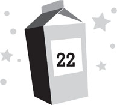

Lunar day 217
Dinner time
It was an hour before Chang felt Nina had recovered enough to get her back to the base. During that time, Chang left me with her briefly to go to the surface and call everyone else on his radio. He announced that we’d found Nina and that all search parties could return to base, then came back down to the pod and repaired Nina’s helmet. Nina slept the whole time. When we finally woke her back up, she seemed to have completely recovered her strength. I had expected that we’d have to help her return to the base, but she wouldn’t hear of it. She suited up and walked back all by herself.
By the time we returned, all the other adults were back from the search. Everyone was gathered in the staging area and cheered Nina’s arrival as we came through the air lock.
“Welcome home!” they all whooped.
“Congratulations on not being dead!” Roddy said.
“This calls for a celebration!” Dr. Marquez exclaimed.
“No,” Nina said sharply. “There’s no need for that. I haven’t done anything worth celebrating. Now if you’ll excuse me, I have a great amount of work to catch up on.” With that, she slipped through the crowd and headed up the stairs toward her residence.
“Work?” Mom asked. “Nina, if anything, you need time to recover.”
“And you should eat something,” Daphne added. “I whipped up a special welcome-back dinner for you! I rehydrated all of your favorite foods!”
“That was a waste of resources,” Nina told her. “I had plenty of emergency rations in the pod. Now, I’m retiring to my quarters for the night—and I’d recommend that the rest of you do the same. Due to today’s events, I assume that many of you have fallen behind on your projects, so tomorrow we’re all going to have a great deal of work to catch up on. Good night.” With that, she slipped into her residence and shut the door behind her.
“Boy,” Kira said, “talk about your party poopers.”
“Yeah,” Violet agreed. “She really pooped this party good.”
“She’s upset that we’re behind schedule?” Dr. Alvarez muttered. “We’re behind schedule because of her!”
“Maybe we should have just left her out there,” someone muttered, though I didn’t see who it was.
With the celebration dead, everyone began to drift back to their rooms. It had been a long, stressful day, and Nina was right that tomorrow would be busy too. I was pretty sure I was going to have extra schoolwork to catch up on.
I was still hungry, though. I hadn’t eaten any emergency rations. In fact, I hadn’t eaten much of anything since breakfast. So I took some of the food Daphne had rehydrated for Nina and scarfed it down in the mess hall. It tasted like damp cardboard, but for once, I didn’t care. Mom sat with me, while Dad hustled Violet off to bed.
“Nina didn’t even thank everyone for helping look for her,” I said, once I’d polished off my dinner.
“I think she was embarrassed by all the attention,” Mom told me. “And by the fact that she had to be rescued at all. By a twelve-year-old boy, no less.”
“I guess,” I agreed.
“Ready for bed?” Mom asked. “You must be exhausted.”
“Actually, I feel grimy,” I told her. “Do you think I could have a shower tonight?”
“Yeah, I think you’ve earned yourself a shower.” Mom proudly tousled my hair, then grabbed my dirty plates. “I’ll take care of these. See you back in the room.”
That’s life on the moon. The biggest reward you can get is a shower.
It wasn’t even a good shower. It was merely standing under a trickle of lukewarm water. But I wasn’t really sticking around to shower anyhow.
“Charlie” was still near the mess as well.
I cleaned myself off anyhow. It might have been lame compared to an earth shower, but it was better than nothing.
Then I toweled off, dressed, brushed my teeth, checked to make sure no one was inside the control room or the mess hall—and headed into the greenhouse.
I wasn’t supposed to go into the greenhouse without permission. No kids were. But I figured it would be all right because Dr. Goldstein was in there.
She was leaning against a table full of potted seedlings, staring at her ruined tomato plants. She wasn’t crying anymore, but she still seemed kind of sad. There was a faraway look in her eyes, and she didn’t even hear me come in.
“Dr. Goldstein?” I asked.
She turned, noticed me for the first time, and started in surprise. I wondered if I looked that way every time Zan appeared to me. Then she forced a smile onto her face.
“Hello, Dashiell,” she said. “What brings you in here?”
“Are you Charlie?” I asked.
Her smile faded. Then she seemed to realize this was a mistake and tried to cover. She didn’t do a very good job of it. It took her a few moments to figure out what the right response might be. She finally put on her best blank look and said, “What are you talking about?”
I’d already seen enough to know I was right, though. “I won’t tell anyone,” I said. “I only want to know why you did it.”
Dr. Goldstein simply stared at me now, seeming unsure what to do.
“Was it to get Nina demoted?” I asked. “So that Chang would become the base commander?”
Dr. Goldstein’s eyes widened in surprise. She seemed to forget all about faking innocence. Or maybe she was tired from hiding what she’d done and ready to own up to it. “How did you ever figure that out?”
“Well, Chang and Nina said they were the only ones who knew that Chang was the temporary second in command. They never discussed it with anyone else, and the only place they ever talked about it was in the control room. But when I was in the control room earlier today, I realized you can hear anything in this greenhouse through the wall. So I figured if you’re in here, you can probably hear everything in the control room, too. And you’re in here all the time, while no one else is supposed to be.”
Dr. Goldstein looked at me curiously. “And that was all the evidence you had?”
“No. I also know you had some problems with Nina. She was riding you pretty hard about how the greenhouse wasn’t working. So I figured, maybe you wanted to get her out of power. . . .”
“I wasn’t trying to kill her,” Dr. Goldstein said quickly. “I was only trying to get her in trouble with NASA so she’d be demoted.”
“I know,” I told her. “Stealing moon rocks is a serious crime. Chang said it wouldn’t be that hard to create a fake alias like Charlie. In fact, he said practically anyone here could do it if they put their mind to it. I checked your bio at dinner. Before you switched to horticulture, you were a computer science major.”
Dr. Goldstein turned away from me, and it seemed she might start crying again. “You’re right about everything. I really didn’t think Nina would accept, but I figured it was still worth a try. There’d been a rumor she needed money. . . .”
“Her mother is sick,” I said. “And something went wrong with the insurance.”
“Oh my.” Dr. Goldstein put her hand to her mouth, looking horrified. “I had no idea. I thought she’d made a bad investment or something. Her mother . . . ? Oh, what have I done?” Tears started to flow down her cheeks. “I didn’t think anyone would get hurt. It seemed so simple. The first time she went out to get the rocks, I watched her to see how she’d do it, and she was only gone fifteen minutes. Last night, I figured it’d be the same, only when she came back in, I’d pretend like I was passing by and catch her in the act. Then I’d report her to NASA. But she didn’t come back and I . . . I didn’t know what to do. . . .” Dr. Goldstein put her face in her hands and broke down, sobbing.
That was the other piece of evidence I’d had against her. The crying. Dr. Goldstein had been distraught all day. I had assumed it was about her plants at first, but in retrospect, it seemed like an awfully extreme reaction, even after her precious tomatoes had been devoured by the Sjobergs. Instead Dr. Goldstein had been acting like she was really devastated about something—like putting someone’s life in danger, maybe. And most importantly, she’d been upset that morning, before anyone else had discovered Nina was missing. The way I figured, she’d known something had gone wrong and was very upset that she’d caused it, but didn’t know what to do without revealing her involvement. Thus all the tears. Only it didn’t seem like the best time to bring all that up.
Instead I said, “It wasn’t your fault. Cesar and Patton are the ones who broke the helmets. . . .”
“But I made her go out there,” Dr. Goldstein cried.
“No, you didn’t. She went by herself.”
“Because I promised her money. Money I wasn’t ever going to deliver. Money she needed for her sick mother. And then, when I realized something was wrong, I didn’t alert anyone because I didn’t want to get in trouble.” Dr. Goldstein pulled a handkerchief from her pocket and blew her nose loudly. “Oh, I’m such a horrible person!”
I hadn’t expected this to happen, so I wasn’t quite sure what to do, except to say, “No, you’re not.”
“If I’d only busted her the first time she went out, this never would have happened,” Dr. Goldstein sobbed.
“Why didn’t you?”
“Because I thought Nina might be able to talk her way out of it. She’d claim she was gathering rocks for scientific reasons or something. But if I could prove she’d done it twice . . . show that she’d already stashed some moon rocks in her room . . . then the evidence would be stacked against her.” Dr. Goldstein blew her nose again and started blubbering into her hankie.
“Oh.” I didn’t know what else to say. I’d never had an adult cry like this in front of me before.
Dr. Goldstein seemed to be getting embarrassed about it herself. She did her best to control her crying and looked at me with red-rimmed eyes. “I know, I’m a wreck,” she admitted. “I’ve been a wreck all day. Nina isn’t the only one who nearly died because of what I did. You and Kira nearly got killed looking for her. And so many other people ended up in danger. I never expected things to spiral out of control like this. If I had, I never would have done it.”
“I know.”
“I’d just had it with Nina. She didn’t seem to have any idea how hard this all was.” Dr. Goldstein waved an arm around the greenhouse. “She acted like growing plants on the moon should have been easy. Like all I’d have to do was stick them in the dirt and water them. But it’s not easy at all. In fact, it was far more difficult than anyone had realized, and I was doing my best, but she was still treating me like I was a failure. Like the plants weren’t growing because I was slacking off. And even when I did finally get some things to grow, that still wasn’t good enough for her.” The sadness had vanished and anger now flared in Dr. Goldstein’s eyes. “She kept riding me and riding me. Insulting my intelligence. Implying it had been a mistake to bring me up here. And I thought, Chang had to be a better leader than her. Plus, he’s a scientist like me. He’d understand what I was going through. That things don’t always work out the way everyone predicts they will. I tried to find another way to get rid of Nina. I filed complaints with her superiors. And you know what happened?”
“They ignored them?” I guessed.
“Worse. They chastised me for insubordination, rather than getting on Nina’s case. And then they told Nina about it and she got upset and started treating me even worse. So I’d had it. I figured something had to be done. So I created Charlie and reached out to Nina and she actually accepted. At first, it worked out better than I could have imagined. And then . . . it didn’t. I’m so sorry.”
“It’s okay,” I said, and I meant it. Even though Dr. Goldstein was right—my life had been put in danger because of her—I didn’t feel angry at her. In fact, I understood exactly why she’d done the things she’d done. Frankly, I had my own issues with Nina and wouldn’t have minded Chang running MBA instead. And everything that had gone wrong that day hadn’t really been solely Dr. Goldstein’s fault. Cesar Marquez and the Sjobergs had also been responsible.
Now the anger faded from Dr. Goldstein’s eyes and a kind of resolve set in. Like she had made an important decision. “Thank you for coming to me this way, Dashiell. For giving me the chance to explain myself, rather than going right to Nina or Chang. It was very . . . helpful.”
“Sure.”
“I think I’m going to have to turn myself in, though. Admit to NASA what I’ve done and suffer the consequences.”
“I think Nina’s going to do the same thing,” I said.
Dr. Goldstein nodded. “Sounds like Nina. Always following the rules.”
“Well,” I said. “Not always.”
Dr. Goldstein laughed, then seemed surprised she’d done it. “It’s not like NASA can fire me anyway,” she said. “There’s no other horticulturalist for a quarter million miles.” She started toward the door, then paused by one of the denuded strawberry plants. “Those lousy Sjobergs,” she muttered. “As if this day hadn’t been terrible enough.”
As if on cue, the shouts of Lars Sjoberg rang through the base. As usual, he sounded angry and abusive.
Dr. Goldstein and I hurried out of the greenhouse to see what was happening.
We weren’t the only ones alerted by the commotion. Everyone else was flooding out of their rooms as well.
Nina and Chang stood on the catwalk outside the Sjobergs’ door. Despite the tirade of insults Lars was hurling, Nina remained perfectly cool and calm. Despite everything she had been through that day, she already seemed back to her old self.
“I have been brought up to speed on your behavior of the past few days,” she was saying. “In light of the fact that you have secretly invested in a rival space tourism business, sabotaged our robotics systems, and stolen food that was communal property, NASA has decided to revoke your ComLink privileges. All your access to the Link is hereby canceled.”
“You can’t do that!” Lars roared. “I have paid a great sum of money for those privileges.”
“And you abused them,” Nina pointed out. “Therefore, to prevent any more abuse, you will be allowed no further contact with anyone on earth for the remainder of your stay here.”
“What?” the rest of the Sjobergs gasped. Then they all started arguing at once how horrible their lives there would be without access to television, Internet, and friends.
“You ought to count your blessings,” Nina said. “You’re getting off easy. If I could, I’d lock every one of you up in this room for the next two months with nothing but dehydrated food and a bucket to poop in. But NASA rejected that. They will, however, be filing charges against you all for collusion with Maximum Adventure and for sabotage of federal property.”
“You’re making a big mistake,” Sonja threatened. “Start trouble with us now, and when we get back to earth, we will ruin this place. We’ll launch a smear campaign to say such terrible things about it that even your own astronauts won’t want to come here.”
“NASA has already released details of the crimes you have committed to the press,” Nina stated. “They’ll be sharing further details of your misbehavior here in the days to come. Your eating all our fresh food today, for example. By the time you get back to earth, the entire planet will know you as the liars, cheats, and thieves that you really are. So anything you say about this base will be suspect.”
Sonja recoiled as though Nina had slapped her, horrified by the idea of anything happening to her precious image. The rest of the family seemed equally upset.
“You can’t treat us this way!” Lars bellowed.
“Yes, we can,” Nina said. “It’s in your contract with us.” She started to leave, then turned back and said, “Oh, and one more thing. I may not be able to lock you up, but I can institute stricter controls over you. If you, or any of your family members, try to retaliate with physical aggression against anyone on this base, I have given Chang here full authority to beat you senseless. Is that understood?”
Lars actually fell silent for a moment. Then he growled, “This is a terrible mistake you are making. Do you have any idea who you’re dealing with here?”
“Yeah,” Chang said. “You’re the four biggest jerks in the universe.”
With that, he and Nina turned away and walked down the catwalk. Lars started screaming again, issuing threats and curses, but everyone simply ignored him and returned to their rooms, letting him know they weren’t afraid of him anymore.
Which was probably the most devastating thing we could have ever done to Lars Sjoberg.
“My, my,” Dr. Goldstein said. She was actually smiling now, looking happier than I’d seen her in weeks. “I guess one good thing has come out of this day after all.”